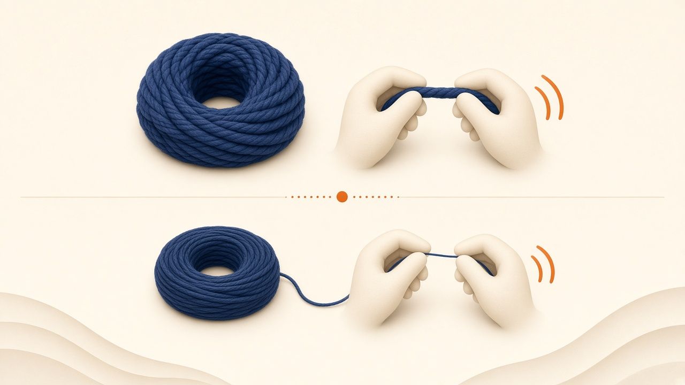
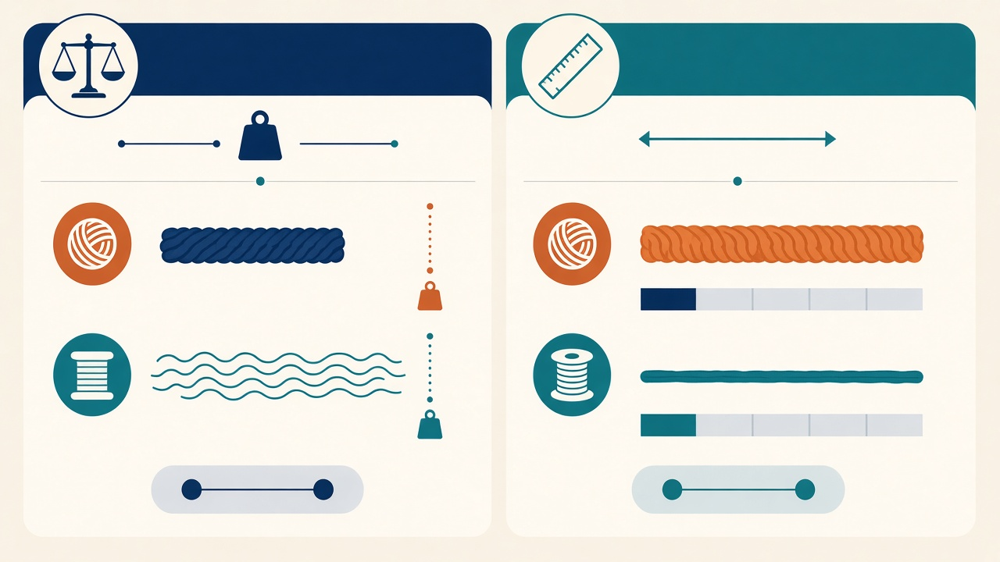
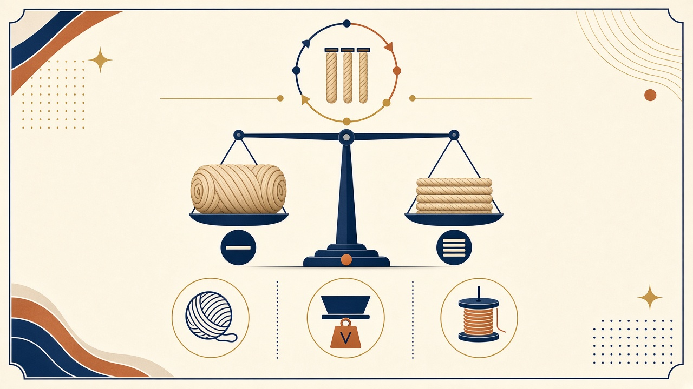

교육자료 · 번수
실 굵기를 숫자로 말하는 법. 면번수는 숫자 클수록 가늘다. 텍스·데니어는 숫자 클수록 굵다. 합격·규격은 작지·바이어를 본다.
같은 면번수(Ne) 줄에서 숫자만 다를 때, 실이 어떻게 달라 보이는지 먼저 본다.

작지·발주에 Ne 30, P150D, Tex 20이 섞여 온다. 어떤 말인지 먼저 가른다.
방적은 링·OE·MVS처럼 “어떻게 뽑는지”. 이 칸은 굵기 숫자 읽는 법.
이 페이지 숫자로 공장 규격을 정하지 않는다. 작지·바이어 스펙을 본다.
숫자 방향이 서로 반대인 두 갈래가 있다. 단위를 빼고 숫자만 보면 틀린다.

면 실에서 많이 씀.
현장 말: 면번수, 미터번수.
이름: Ne · Nm
길이당 무게로 셈.
현장 말: 텍스, 데니어.
이름: Tex · Denier · dtex
같은 “30”이라도 Ne 30과 Tex 30은 완전히 다르다. 단위를 함께 읽는다.
| 쉬운 말 | 현장 말 | 한 줄 뜻 |
|---|---|---|
| 숫자↑ = 가늘 | 면번수 (Ne) | 1 lb에 840 yd 타래가 몇 개 |
| 숫자↑ = 가늘 | 미터번수 (Nm) | 1 kg에 1000 m 타래가 몇 개 |
| 숫자↑ = 굵음 | 텍스 (Tex) | 1000 m당 몇 g |
| 숫자↑ = 굵음 | 데니어 (Denier) | 9000 m당 몇 g. 필라멘트에 많음 |
| 숫자↑ = 굵음 | 디텍스 (dtex) | 10000 m당 몇 g. Tex×10 |
출처 예: 공개 스레드·텍스타일 스쿨 환산. 대략치. 계약 환산표가 있으면 그쪽.

| 바꿔 읽기 | 식 | 쉬운 메모 |
|---|---|---|
| 텍스 ↔ 면번수 | Tex ≈ 590.5 / Ne | 면번수 클수록 텍스 작음 |
| 데니어 ↔ 텍스 | Denier = 9 × Tex | 길이당 무게 계열 |
| 디텍스 ↔ 텍스 | dtex = 10 × Tex | 필라멘트 표기 많음 |
| 미터번수 ↔ 면번수 | Nm ≈ 1.693 × Ne | 둘 다 “클수록 가늘” |
면번수 Ne 30이면 Tex ≈ 590.5 ÷ 30 ≈ 19.7.
데니어로 바꾸면 9 × 19.7 ≈ 177.
“Ne 30은 꽤 가는 면 실”로 읽으면 된다. 공장 창으로 쓰지 말 것.
| 표기(예) | 대략 | 쓰임(공개·작지 예) |
|---|---|---|
| Ne 20 | ~29.5 tex | 헤비 저지 / 플리스 |
| Ne 26 | ~22.7 tex | 바디 공개 예 |
| Ne 30 | ~19.7 tex | 가는 코마 예 |
| Ne 40 | ~14.8 tex | 여름 컴팩트 예 |
| P150D | ~167 dtex | 필라멘트 굵기 말. Ne랑 다른 줄 |
표의 Ne 창은 공개·작지에서 자주 보는 예다. 공장 Ne 창을 규칙으로 단정하지 않는다. P150D는 필라멘트 굵기 말. Ne랑 다른 줄. 뽑는 루트는 방적 칸.
| 현장 말 | 쉬운 말 | 주의 |
|---|---|---|
| 면번수 / Ne | 숫자 클수록 가늘 | 면 실에서 많음 |
| 미터번수 / Nm | 숫자 클수록 가늘 | 미터법 |
| 텍스 / Tex | 숫자 클수록 굵음 | g/1000 m |
| 데니어 / D | 숫자 클수록 굵음 | P150D = 150 데니어급 |
| 디텍스 / dtex | 숫자 클수록 굵음 | Tex×10. Ne와 섞지 말 것 |
교육용 영상은 이 페이지에 아직 없다.
이 페이지 숫자로 공장 규격을 정하지 않는다. 작지·바이어 스펙을 본다.
교육용 영상은 이 페이지에 아직 없다. 숫자 체계만 이 페이지에서 익히고, 뽑는 방법은 방적으로 간다.
면번수는 숫자 클수록 가늘다. 텍스·데니어는 클수록 굵다.
Tex = g/1000 m. Denier = g/9000 m. Ne = 840 yd hank/lb.
Tex ≈ 590.5 / Ne. Denier = 9×Tex. Nm ≈ 1.693×Ne.
P150D ≈ 150 denier급(~167 dtex). 면번수와 혼동 금지.
둘 다 길이당 무게. Denier = 9×Tex. dtex = 10×Tex.
../방적/ 은 링·OE·MVS. 이 칸은 숫자 체계.
작지·바이어. 이 페이지 예로 공장 Ne 창을 정하지 않는다.
Nm ≈ 1.693 × Ne (공개 환산).